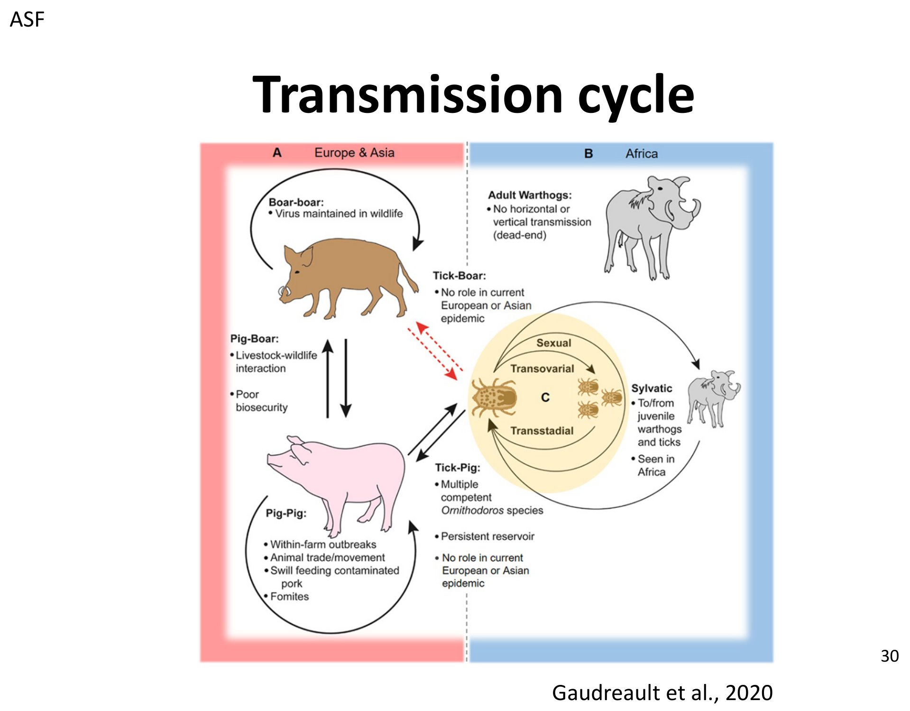
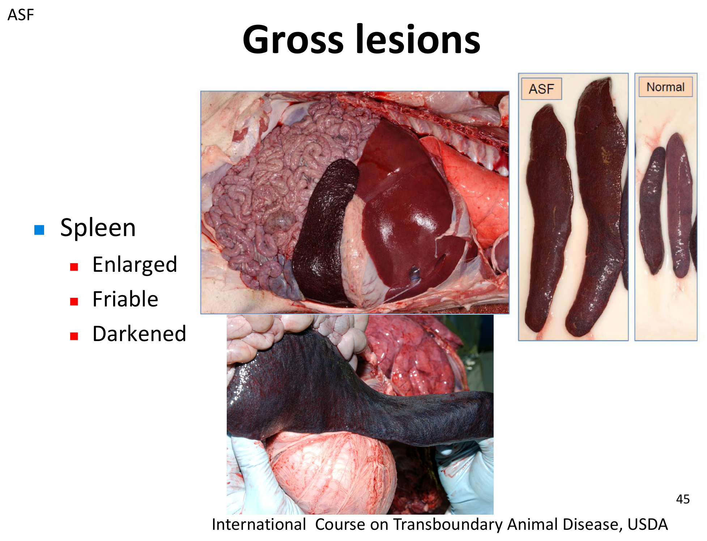
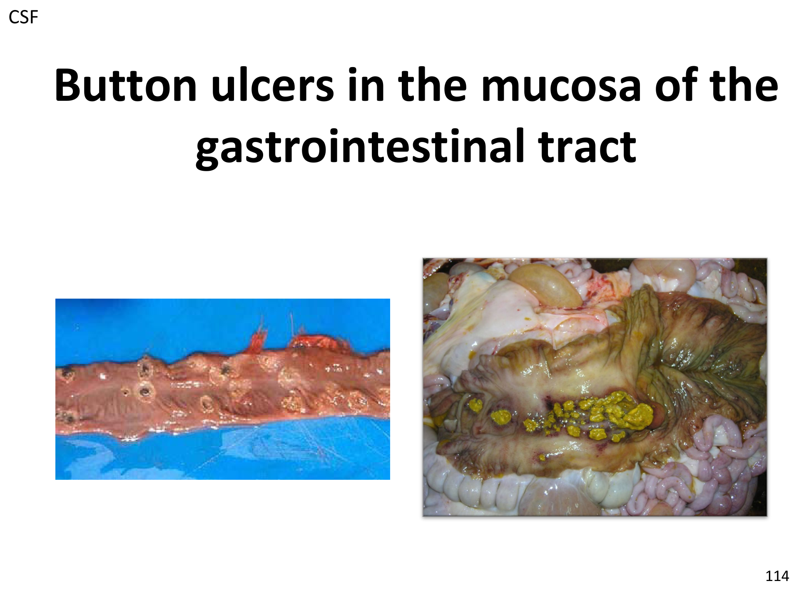
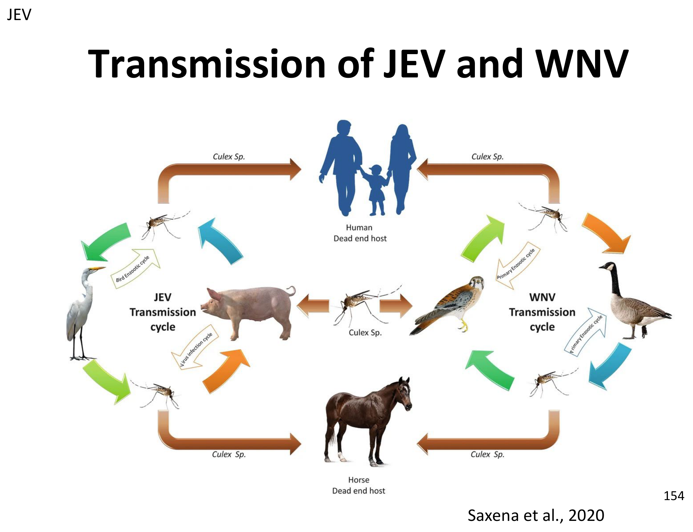

重點摘要
- ASF 與 CSF 是豬隻「全身性出血性疾病」的經典鑑別診斷組合，但臨床上幾乎無法單憑症狀區分：挑戰試驗顯示兩者引起的臨床症狀非常相似，必須靠實驗室診斷確診；不過兩者從未在同一頭豬身上被分離出，且教科書病變仍有各自代表性特徵（見下方比較表），這組對比是本章出題率最高的觀念。
- ASF 是 DNA 病毒（Asfarviridae），環境抵抗力極強、非人畜共通，但對產業殺傷力巨大：血液中 4°C 可存活長達 18 個月、冷凍肉品可存活數年，這也是為什麼防疫重點放在生物安全與豬肉製品管制而非疫苗；目前尚無全球公認疫苗，基因刪除減毒活疫苗在越南、菲律賓、印尼陸續獲准使用，是新興但仍需謹慎評估的工具。
- CSF 是 RNA 病毒（Pestiviridae），獨有「先天型」與「產後持續感染型」兩種臨床型式，是全章最容易考倒人的機轉：母豬懷孕中期（50–70 天）感染，胎兒因免疫耐受（immunotolerance）無法辨識病毒、終生不產生可偵測抗體卻持續排毒數月致死，稱為 late-onset CSF——這種「外觀健康的帶原豬」是控制與撲滅最大的隱藏風險。
- 台灣 CSF 根除史是具體的國考時間軸考點：1996 年後田間病毒基因型由 3.4 轉為 2.1、2006 年後田間未再檢出病毒、2023 年起停止疫苗注射——長期監測＋階段性停打疫苗是成功根除的關鍵示範案例。
- 兩個病理病變是視覺辨識的直接考點：CSF 的腸胃道黏膜「鈕扣狀潰瘍（button ulcers）」與脾臟梗塞（splenic infarction）是教科書代表病變；ASF 的脾臟則是腫大、質脆、暗紅至黑色，加上淋巴結出血腫脹——看圖辨病是必練題型。
- JEV 的核心觀念是「豬是增幅宿主，不是終端宿主」：人與馬感染後是 dead-end host（不會再傳染給蚊子），豬感染後產生高效價病毒血症、足以感染叮咬的病媒蚊，是流行病學上的關鍵放大環節；豬場最大的臨床意義是母豬妊娠 60–70 天前感染會造成流產／木乃伊化／死產，公豬則可能睪丸炎併發暫時性不孕。
- HEV 是純粹的食品安全／公衛議題，豬本身幾乎不會生病：基因型 3、4 可感染人與豬（人畜共通），豬場內以糞口途徑傳播、豬隻大多無症狀；豬肝臟中 HEV RNA 陽性率可達 24%，豬農血清抗體陽性率是一般民眾的 3.5 倍——防治重點是徹底煮熟豬肉與豬肝，而不是治療豬隻疾病。
非洲豬瘟：病毒學與環境抵抗力 ASF Virology & Resistance
非洲豬瘟（African swine fever, ASF）是家豬與野豬高度傳染性的病毒疾病，死亡率可達 100%。非人畜共通，但對養豬產業與國際貿易的衝擊極大；病毒在環境中極度穩定，是防疫上最大的挑戰之一。
ASFV 是唯一已知經由節肢動物（軟蜱）傳播的 DNA 病毒：Asfarviridae 科、Asfivirus 屬，基因體 170–193 kb，編碼超過 160 個基因，其中約 1/3 對細胞內複製非必要，但對逃避宿主免疫防禦很重要；病毒顆粒結構複雜，含超過 68 種蛋白質、分多層排列。
基因型與毒力
- 目前已知 24 種基因型，毒力差異極大：高毒力可致 100% 死亡率，低毒力則僅造成血清轉陽。
- 所有基因型都存在於非洲；基因型 I 與 II 是目前在非洲以外地區（歐洲、亞洲）流行的型別。
- 近年已在部分地區偵測到基因型 I／II 重組病毒，其致病力高，且基因型 II 減毒活疫苗對其挑戰無保護力，是新興威脅。
宿主範圍
高度易感，臨床顯性
高度易感，臨床顯性
非洲儲存宿主，多為亞臨床
非洲儲存宿主，多為亞臨床
環境中的存活時間重要
| 環境／介質 | 存活時間 |
|---|---|
| 糞便（室溫） | 數日 |
| 污染豬舍 | 數月 |
| 血液（4°C） | 長達 18 個月 |
| 部分豬肉製品（如鹽漬火腿） | 超過 140 天 |
| 冷凍屠體 | 數年 |
病毒去活化
- 非多孔表面消毒：次氯酸鈉、檸檬酸、部分碘劑與四級銨鹽溶液；血清與糞便會大幅降低消毒劑效力，徹底清潔後再消毒非常重要。
- 肉品／組織：70°C 加熱 30 分鐘可去活化。
- pH 敏感：pH < 3.9 或 > 11.5 可去活化；若有血清存在，需要更高 pH（13.4）才能達到效果。
ASF 最早於 1921 年在肯亞發現，2007 年基因型 II 傳入喬治亞後展開跨洲傳播，2018 年進入亞洲後快速擴散至 20 個國家，目前已在多數亞洲國家呈現地方性流行，並已進入馬來西亞、菲律賓、寮國、越南等地的野豬族群，成為根除的長期障礙。
非洲豬瘟：傳播與致病機轉 Transmission & Pathogenesis
感染豬、野豬與受污染的飼料、人員、車輛、豬肉是 ASF 的主要感染來源；傳播路徑多元，是防疫措施必須多管齊下的原因。
傳播途徑
主要經口鼻途徑；病毒存在於分泌物、排泄物、組織，血液中濃度最高。
餵食未煮熟的廚餘／餿水（swill feeding），或接觸受感染屍體。
衣物、車輛、器械；環境中的血液、腹瀉物、糞便污染。
生物性：軟蜱（Ornithodoros）叮咬；機械性：螫蠅（Stomoxys）等吸血昆蟲。
Ornithodoros 軟蜱可經跨期（transstadial）、經卵（transovarial）與性傳播維持病毒，且終生帶毒，蜱群可將病毒維持數年——在非洲，疣豬與蜱之間的循環是病毒長期存續的關鍵，蜱到豬的傳播在非洲疫區意義重大。

致病機轉
病毒血症通常於感染後 4–8 天開始，因宿主缺乏完全中和性抗體，可持續數週至數月。
潛伏期
- 直接接觸感染：4–19 天
- 蜱咬感染：< 5 天
非洲豬瘟：臨床症狀與病理病變 Clinical Signs & Lesions
未曾暴露過的豬群發病率可達 100%，死亡率則依基因型與毒力高低而異，從 < 5% 到 100% 都有可能，各年齡層皆可感染。
四種病程型式
| 型式 | 特徵 | 死亡率 |
|---|---|---|
| 最急性（Peracute） | 厭食、體溫 > 41°C、沉鬱、皮膚充血；發病後 1–4 天死亡，常是場內感染的第一個徵兆 | 極高 |
| 急性（Acute） | 高熱 40–42°C、厭食、嗜睡、無力／臥地、紅斑與發紺（耳與體側皮膚）、出血、腹瀉、流產、呼吸困難、鼻分泌物 | 90–100%（發病後 7–10 天死亡） |
| 亞急性（Subacute） | 中等毒力病毒株，症狀類似急性但較輕微，仍有流產、發熱、紅斑發紺 | 30–70% |
| 慢性（Chronic） | 間歇性低熱、厭食沉鬱、消瘦發育不良、咳嗽、關節腫脹、腹瀉、偶爾嘔吐、皮膚病灶 | 可能致死 |
大體病變
主要病變集中在脾臟、淋巴結、腎臟與心臟，可見大量出血性病灶。

腫脹、出血。
皮質與切面點狀出血（petechiae），可能有腎周水腫。
其他器官常見出血、點狀出血、瘀斑、水腫，包括肺臟、膽囊、腦／腦膜（充血、水腫）。
慢性感染的病變
- 局灶性皮膚壞死與潰瘍
- 肺實質化（乾酪樣肺炎）
- 纖維蛋白性心包炎、胸膜沾黏
- 淋巴結病、關節腫脹
非洲豬瘟：鑑別診斷、診斷與防治 DDx, Diagnosis & Control
鑑別診斷──全身性敗血症／出血性疾病
古典豬瘟、急性 PRRS、豬環狀病毒相關疾病（PCVAD）、偽狂犬病、丹毒、沙門氏菌病、放線桿菌病、格拉瑟氏病（Glasser's disease）、豬附紅血球體病、血小板減少性紫斑、殺鼠劑（warfarin）中毒、重金屬中毒。
診斷──抗原檢測
ASFV 感染豬周邊血液白血球原代培養，感染細胞會產生豬紅血球玫瑰花環狀吸附現象；高度特異，僅 ASFV 有此吸附能力，作為確診參考試驗；缺點是需原代細胞培養、並非所有毒株都會吸附、耗時 3–10 天。
可用於臨床檢體、腐敗檢體、新鮮組織／血液，是現場快速篩檢的主力工具。
診斷──抗體檢測
| 類型 | 方法 |
|---|---|
| 篩檢用 | ELISA |
| 確診用 | 免疫墨點法（IBT）、間接螢光抗體法（IFAT）、間接免疫過氧化酶法（IPT） |
防治
基因刪除減毒活疫苗是目前最先進的方法，但安全性與效力仍需審慎評估。越南已核准三支活疫苗（2022、2023、2025 陸續核准），菲律賓 2026 年 9 月核准商業使用，印尼 2025 年 4 月核准緊急使用——目前尚無全球公認的標準疫苗方案，無疫苗國家仍以生物安全與檢疫為防線核心。
預防措施
- 隔離病豬；避免與野豬接觸，可能時將豬隻圈養於室內
- 新引進豬隻應隔離至少 30 天確認健康
- 禁止餵食未煮熟豬肉製品（餿水、廚餘、垃圾）
- 對車輛、設備、鞋靴、衣物徹底消毒
- 妥善處理糞肥與屍體
- 接觸家豬前避免獵捕野豬；控制蜱與其他病媒昆蟲（地方性流行區較難落實）
控制措施
野豬在歐洲與部分亞洲地區的傳播中扮演重要角色；管理野豬族群、降低與低生物安全豬場的接觸機會，是防治不可忽略的一環。
ASF 是嚴重、非人畜共通的疾病，可造成極高死亡率與重大經濟／貿易損失；病毒環境持久性與人為傳播（受污染豬肉、介質、車輛）是防疫最大挑戰；野豬可維持病毒循環，使根除更加困難；早期發現、快速診斷、移動管制、撲殺與嚴格生物安全仍是防治基礎，疫苗接種是新興的輔助工具。
古典豬瘟：病毒學與環境抵抗力 CSF Virology & Resistance
古典豬瘟（Classical swine fever, CSF）是豬隻高度傳染性疾病，常導致死亡，發熱與出血是主要特徵。在台灣屬於甲類法定傳染病。
CSF 死亡率可高達 100%，感染豬齡越小、死亡率越高；症狀包括高熱、沉鬱、神經症狀與流產；感染同時會造成免疫抑制，增加續發感染風險。
病毒分類
CSFV 為有囊膜 RNA 病毒，屬 Pestiviridae 科 Orthopestivirus 屬，僅有單一血清型，但分為三種基因型：
| 基因型 | 特徵 |
|---|---|
| Genotype I | 古老病毒株與傳統減毒活疫苗株 |
| Genotype II | 1980 年代後流行的主要田間株 |
| Genotype III | 特定地區獨有，如台灣、南韓、日本、泰國、英國 |
※ 歐洲與亞洲田間流行株已由原本的基因型 I 或 III 轉變為基因型 II。
毒力分級
急性病程，幾乎全數死亡
亞急性或慢性感染
亞臨床感染，主要對胎兒致病
疫苗株
環境抵抗力與去活化
| 條件 | 存活時間／效果 |
|---|---|
| 4°C | 6 週 |
| 20°C | 2 週 |
| 37°C | 7–15 天 |
| 50°C | 3 天 |
| 冷藏肉品／冷凍肉品 | 數月／數年 |
| pH 穩定範圍 | pH 5–10（< 3 或 > 11 去活化） |
| 消毒劑 | 有機溶劑（乙醚、氯仿）、2% 氫氧化鈉、1% 甲醛 |
| 加熱 | 65.5°C／30 分鐘，或 71°C／1 分鐘 |
全球現況
目前共 39 個會員國被認定為 CSF 清淨國，包括台灣、美國、加拿大、紐西蘭、澳洲與大部分歐洲國家。
1997–1998 年荷蘭爆發 CSF，超過 400 座豬場受感染，約 1,200 萬頭豬遭撲殺，損失超過 23 億美元——是說明 CSF 經濟衝擊規模最常被引用的案例。
病程時間軸
- 潛伏期：2–15 天
- 急性臨床期：10–15 天
- 慢性／先天型／產後持續感染型：數週至數月
古典豬瘟：致病機轉與臨床型式 Pathogenesis & Clinical Forms
致病機轉
※ 血管內皮細胞壞死是 CSF 出血傾向的核心機轉，與 ASF 的出血機轉不完全相同，複習時建議分開記憶。
四種臨床型式CSF 獨有・重要
CSF 與 ASF 最大的臨床鑑別特徵在於：CSF 除急性與慢性型外，還有 ASF 沒有的「先天型」與「產後持續感染型」，皆與病毒可經胎盤垂直傳播、造成免疫耐受有關。
急性型（Acute）
好發於高毒力毒株感染幼齡豬：高熱（> 41°C）、沉鬱、發紺、結膜炎、便秘後轉腹瀉、神經症狀、流產，死亡率高。
慢性型（Chronic）
好發於低毒力毒株或部分免疫豬場：發熱、食慾不振、消瘦、發育遲滯，感染後 2–3 個月死亡；感染豬無法產生有效免疫反應，外觀可能健康，但終其臨床病程持續排毒直到死亡。
先天持續感染型（Congenital）高頻考點
母豬感染後病毒可經胎盤傳給胎兒，病程取決於毒株毒力與妊娠時期：可能導致死產或出生體弱、體型小的仔豬；若母豬於妊娠中期（50–70 天）感染，出生仔豬可能帶有持續性病毒血症。
胎兒免疫系統尚未成熟時無法辨識病原並產生抗體——感染豬可能外觀健康或僅有非典型症狀，可存活數月後才死亡，終生持續排毒，抗體檢測往往呈陰性，疫苗接種效果不佳，病毒因此得以在環境中持續存在。這是造成場內隱性擴散、根除計畫失敗的主要原因之一。
產後持續感染型（Postnatal）
新生仔豬出生後才感染：因免疫系統未成熟造成免疫抑制，無法產生抗體；感染豬可能臨床健康或僅有非典型症狀，可存活數月後死亡；在缺乏適應性免疫反應下，病毒高度複製並大量排毒。
古典豬瘟：病理病變與鑑別診斷 Lesions & DDx
大體病變
- 淋巴結周邊出血
- 脾臟梗塞（splenic infarction）
- 腎臟、膀胱及其他器官點狀出血
- 扁桃腺壞死
- 睪丸點狀出血
- 迴盲瓣潰瘍
- 腸胃道黏膜「鈕扣狀潰瘍」（button ulcers）

鑑別診斷
非洲豬瘟、豬繁殖與呼吸綜合症（PRRS）、豬環狀病毒相關疾病（PCVAD）、偽狂犬病、細菌性敗血症（丹毒、沙門氏菌病）、旋毛蟲病。
德國曾比較中等毒力 ASFV 與 CSFV 的病例：中等毒力的 ASFV 已不再表現典型的大量血樣腹瀉與脾臟腫大；挑戰試驗顯示 ASFV 與 CSFV 誘發的臨床症狀非常相似，兩者從未在同一頭豬身上被分離出。結論：光靠臨床症狀難以區分 ASF 與 CSF，確診必須仰賴實驗室診斷。
古典豬瘟：診斷、防治與台灣根除史 Diagnosis, Control & Taiwan's Eradication
診斷──抗原檢測
核酸擴增與序列分析確認毒株。
RT-PCR：核酸擴增＋電泳約 4 小時，定序約 1 天；qRT-PCR：約 2 小時、可分辨基因型（含疫苗株與田間株），敏感度與特異度皆高。
診斷檢體：扁桃腺、脾臟、淋巴結、腎臟、腦、迴盲瓣、血液。
診斷──抗體檢測
| 方法 | 特性 |
|---|---|
| 病毒中和試驗（FAVNT） | 黃金標準，需細胞培養與病毒操作，耗時約 3 天 |
| ELISA | 操作簡單、不需細胞培養，約半天可得結果，但須與中和抗體結果評估相關性 |
豬隻可能感染其他 Pestivirus 屬病毒（APPV 非典型豬 Pestivirus，與新生仔豬先天性震顫 A-II 型有關；BVDV／BDV 經接觸牛羊或疫苗原料污染而感染豬），彼此間有交叉反應性，判讀 CSFV 中和抗體結果時需納入考量。
防治三支柱
活減毒疫苗：對田間株提供完整保護；次單位／標記疫苗：可 DIVA（區分感染與接種豬）
抗體監測評估族群免疫力；抗原監測掌握疫情動態
場區管理與移動管制
DIVA 標記疫苗（歐盟核准）
| 疫苗 | 原理 |
|---|---|
| Suvaxyn CSF Marker（CP7_E2alf 嵌合活疫苗） | 以 BVDV 為骨架，置換 CSFV 的 E2 基因；搭配 CSFV Erns ELISA 可 DIVA |
| Porcilis Pesti（E2 次單位疫苗） | 同樣搭配 CSFV Erns ELISA 可 DIVA |
CSFV Erns ELISA 敏感度與特異度不佳，BVDV／BDV 的 Erns 抗體可能交叉反應造成偽陽性，僅適合族群篩檢，不能作為個體確診依據。
清淨區 vs 地方流行區策略
疫苗接種可預防疾病擴散；DIVA 標記疫苗被視為未來控制與根除的可行選項。
撲殺政策（stamping-out）：早期發現、移動管制、清潔消毒——已使北美與西歐大部分地區成功根除 CSF。
野豬角色
野豬在歐洲部分地區與日本的 CSF 傳播中扮演重要角色；日本因野豬遷徙特性，已使用口服疫苗投放於野豬族群，但控制仍具挑戰。
🇹🇼 台灣 CSF 根除歷程國考重點
- 1996 年後：田間病毒族群由基因型 3.4 轉變為 2.1，兩者皆屬中等毒力。
- 疫苗有效性：LPC（兔化）疫苗對基因型 2.1 與 3.4 皆具保護力。
- 2006 年後：田間未再檢出病毒。
- 2023 年起：正式停止疫苗注射。
CSF 是高度傳染性、非人畜共通的病毒病，臨床表現範圍廣（急性到隱性帶原都有）；有效疫苗雖可快速提供保護，但也會使監測與根除變得複雜；成功根除需要疫苗策略、監測、診斷、移動管制與審慎規劃的停打時機四者並行——台灣是長期監測＋階段性停打疫苗成功根除的實例。
ASF vs CSF 綜合比較 Side-by-Side Comparison
兩者都是造成豬隻高死亡率全身性出血性疾病的甲類傳染病，也是台灣現行防疫最重視的兩大豬病；下表整理關鍵差異，方便鑑別診斷時快速對照。
| 項目 | 非洲豬瘟 ASF | 古典豬瘟 CSF |
|---|---|---|
| 病毒科屬 | Asfarviridae（DNA 病毒） | Pestiviridae（RNA 病毒） |
| 人畜共通 | 否 | 否 |
| 病媒 | Ornithodoros 軟蜱（生物性） | 無節肢動物病媒 |
| 環境抵抗力 | 極強（血液 4°C 可達 18 個月，冷凍肉品數年） | 中等（4°C 約 6 週，冷凍肉品數年） |
| 代表性大體病變 | 脾臟腫大、質脆、暗紅至黑色 | 脾臟梗塞、腸胃道鈕扣狀潰瘍 |
| 臨床型式 | 最急性／急性／亞急性／慢性 | 急性／慢性／先天型／產後持續感染型 |
| 垂直傳播致持續感染 | 不顯著 | 是（late-onset CSF，免疫耐受機制） |
| 台灣現況 | 目前非疫區，防疫重點在邊境檢疫與生物安全 | 1996 起監測、2006 後無病例、2023 起停止疫苗接種 |
| 疫苗 | 基因刪除減毒活疫苗（越南等國已核准，全球尚無公認方案） | 活減毒疫苗＋DIVA 標記疫苗（歐盟已核准） |
臨床症狀高度重疊，不能只憑症狀鑑別 ASF 與 CSF；務必記住兩者從未同時分離自同一頭豬，確診必須仰賴實驗室（病毒分離、PCR、血清學）。
日本腦炎 Japanese Encephalitis
JEV 於 1933 年在日本首次自 Culex tritaeniorhynchus 蚊子分離確認為致病原，是人類病毒性腦炎的主要病因，也能造成馬匹致死性腦炎；豬感染後主要造成生殖障礙，偶爾在仔豬引發神經症狀。
JEV 屬 Flaviviridae 科 Orthoflavivirus 屬（原 Flavivirus 屬），與登革熱、黃熱病、西尼羅病毒同屬；基因體為單股正義 RNA，約 11 kb。
公共衛生意義
- 全球每年約 10 萬例臨床病例，超過 30 億人居住於風險地區，約 75% 病例發生於 15 歲以下兒童。
- 豬隻族群中的病毒增幅通常先於人類流行——但人類疫情也可能在豬隻族群不大或密度不高的情況下發生（鳥－蚊循環已足夠）。
流行病學：豬是增幅宿主，不是終端宿主重要
JEV 是人畜共通病毒，在自然界由 Culex 屬蚊子、特定野生／家禽鳥類與豬（脊椎動物宿主）維持循環；人與馬感染後為偶發的終端宿主（dead-end host），不會將病毒再傳給蚊子。

基因型
單一血清型，共 5 種基因型（I–V）；近數十年基因型 I 已取代原本流行的基因型 II、III，是多數地區目前的優勢流行株（含台灣）。
豬感染後產生高效價病毒血症，通常持續 2–4 天，足以感染叮咬的病媒蚊；豬的病毒效價一致高於其他家畜或野生動物，是地方流行區監測病毒傳播最敏感的指標動物。鷺科等涉禽類則被認為是重要的維持宿主，可能在流行期扮演增幅角色。
致病機轉
- 感染始於受感染蚊子叮咬；豬與豬間接觸傳播也可能扮演重要角色。
- 病毒最快可於感染後 3 天到達中樞神經系統。
- 新生兒與幼齡動物比成年動物更容易發展成嚴重中樞神經感染。
臨床表現
最常見的表現是生殖障礙：流產、產下死產或木乃伊化胎兒，或產下體弱活仔。妊娠 60–70 天前感染才會造成明顯生殖障礙，之後感染則影響很小或無影響。
可能造成不孕：睪丸水腫、充血，導致活動精蟲數下降與精蟲型態異常；多為暫時性，大多數病例可完全恢復。
大體與顯微病變
- 母豬生殖障礙病例通常無特徵性病變。
- 公豬：鞘膜與副睪增厚，伴隨副睪、鞘膜與睪丸水腫發炎。
- 死產或體弱仔豬：水腦、皮下水腫、小腦發育不全、脊髓髓鞘化不全。
- 感染仔豬顯微病變：瀰漫性非化膿性腦炎，特徵為神經元壞死與血管周圍套疊現象（perivascular cuffing）。
鑑別診斷
（流產／胎兒木乃伊化或死產、6 月齡以下仔豬腦炎）偽狂犬病、古典豬瘟、PRRS、豬血凝性腦脊髓炎病毒、藍眼病副黏液病毒（Rubulavirus）、Menangle virus、豬 teschovirus、豬小病毒、布氏桿菌病、鹽中毒。
診斷
檢體：胎盤與胎兒組織（生殖病例）、腦／脾／肝／扁桃腺（病毒／RNA 檢測）、全血（早期病毒血症）、血清（血清學＋早期病毒偵測）、間隔 2–4 週配對血清（證明血清轉陽）。
方法：抗原──病毒分離、RT-PCR、免疫組織化學（IHC）；抗體──ELISA、間接螢光抗體（IFA）、病毒中和試驗（VN）。
豬實驗感染近緣黃病毒後可觀察到對 JEV 的交叉中和抗體反應；若先感染西尼羅病毒（WNV）再挑戰 JEV，也會出現類似的加強反應（booster response）。在黃病毒高度流行地區，豬可能因先前感染近緣黃病毒而產生交叉保護力，抑制後續 JEV 感染。
防治
- 疫苗接種：不活化（小鼠腦源性）或活減毒疫苗已用於日本、台灣、尼泊爾、韓國；活減毒疫苗效力優於不活化疫苗。基因型 I 在亞洲多地興起，已引發對以基因型 III 為基礎的疫苗效力是否足夠的疑慮（對基因型 I 引起的死產／流產保護力較基因型 III 為低）。
- 病媒蚊管理：理論上可避免豬隻暴露於受感染蚊子，但除非豬場處於無蚊環境，否則實務上難以落實；豬場鄰近的公共衛生蚊媒防治計畫也有助於降低豬隻感染率。
E型肝炎 Hepatitis E
E 型肝炎病毒（HEV）是人類 E 型肝炎的病原，在亞洲與非洲多數發展中國家是重要公共衛生問題，在美國與多數歐洲國家等已開發國家也屬地方性流行；豬感染 HEV 只造成顯微層級的肝炎病變、無臨床疾病，但透過直接接觸與食用未煮熟豬肉／豬肉製品，對人類構成人畜共通感染風險。
HEV 屬 Hepeviridae 科，基因體為單股正義 RNA，約 7.2 kb；共分 8 種基因型（HEV-1 至 HEV-8）：
- HEV-1、HEV-2：僅感染人類
- HEV-3、HEV-4：可感染人、豬與其他物種（人畜共通，臨床意義最大）
- HEV-5、HEV-6：感染野豬
- HEV-7、HEV-8：感染駱駝
病毒去活化
HEV 對腸道中的酸性與弱鹼性環境具抵抗力；充分烹煮可完全去活化市售豬肝中的感染力，但將受污染豬肝勻漿以 56°C 加熱 1 小時並不能完全去活化病毒——提醒「加熱」與「充分煮熟」並不相同，是食品安全衛教的重要細節。
公共衛生意義
- 豬是重要的病毒儲存宿主；職業性接觸感染豬隻與食用受污染豬肉製品是主要人畜共通感染途徑。
- HEV-3、HEV-4 確認具人畜共通傳播能力；HEV-5、HEV-6（野豬）的人畜共通潛力則尚未確認。
- 受感染豬隻經糞便排出大量病毒，構成環境安全隱憂。
一般民眾血清抗體陽性率約 11.5%，豬農則達 29.5%——豬農感染風險約為一般民眾的 3.5 倍，凸顯職業暴露是重要感染途徑。
豬肝檢體中 HEV RNA 陽性率高達 24%，是所有豬肉製品中陽性率最高的部位——豬肝務必徹底煮熟是最直接的臨床衛教重點。
流行病學
- 豬 HEV 感染全球豬群普遍存在，與當地人類 HEV 是否流行無關；除家豬外野豬也會感染。
- 感染通常發生於母源抗體消退後的 2–3 月齡；血清陽性率隨生長期年齡增加而上升。
傳播與致病機轉
豬與豬間主要經糞口途徑傳播，未感染豬因直接接觸感染豬或攝入受糞便污染的飼料／飲水而感染。病毒經口攝入後先在腸胃道複製，再擴散至肝臟（標的器官）；肝外複製部位包括小腸、大腸與淋巴結。感染豬會經糞便持續排毒約 7 週。
臨床表現與病變
自然與實驗感染皆無症狀。
臨床正常，但可見肝臟與腸繫膜淋巴結輕度至中度腫大。
輕度至中度多發性淋巴漿細胞性肝炎與局灶性肝細胞壞死，感染後 20 天左右病變最嚴重。
診斷
檢體：血清／血漿（抗體與 RNA）、糞便或直腸拭子（RT-PCR 測 RNA）、肝臟組織（RNA，多用於剖檢或屠宰場採樣）、膽汁（RNA）。
豬 HEV難以在細胞培養中有效增殖，僅少數毒株可活體外培養，目前診斷主要依賴 PCR 與 ELISA；ELISA 常用重組 HEV 衣殼蛋白（多源自 HEV-3）作為抗原。
免疫與防治
- HEV 衣殼蛋白具免疫原性，可誘發保護性免疫；來自血清陽性母豬的仔豬，母源抗體可維持 7–9 週並提供保護。
- 豬先感染 HEV-3（豬源）後，對後續 HEV-3／HEV-4（人源）的攻毒具保護力，顯示跨基因型交叉保護的可能性。
- 目前商業化人用疫苗僅在中國核准，尚未於其他地區使用；豬隻接種疫苗或有助於降低人畜共通傳播風險，但尚未廣泛應用。
- 加強個人與公共衛生習慣，可降低豬場內的傳播。
HEV 感染豬隻通常無症狀，但豬是重要的人畜共通儲存宿主；HEV-3、HEV-4 可同時感染豬與人，是最具臨床／公衛意義的基因型；豬與豬間主要經糞口傳播，人類則透過職業接觸或食用未煮熟豬肉製品暴露；防治重點在於衛生管理、降低環境污染與徹底烹煮，而非治療豬隻本身的疾病（因為豬本身幾乎不會發病）。
學習重點整理
考試／臨床實務角度的整理，方便複習前快速掃過。
練習題 Practice Quiz
涵蓋本週各章節重點，先自己作答再點「顯示答案」核對，答錯的觀念回對應章節重讀一次。
ASF 並非人畜共通疾病，對人類不具致病性，但對豬隻與養豬產業的衝擊極大，且病毒環境抵抗力極強，是防疫上的一大挑戰。
先天持續感染型（late-onset CSF）是因胎兒免疫系統未成熟、產生免疫耐受，感染豬終生持續排毒卻往往「抗體檢測不到」，外觀可能健康，是場內隱性擴散的高風險來源，也是篩檢的一大難點。
JEV 需經由蚊子叮咬傳播，人與馬感染後屬於偶發的終端宿主（dead-end host），體內病毒血症不足以再感染叮咬的蚊子，不會參與病毒的擴大傳播循環；豬才是關鍵的增幅宿主。
ASFV 屬 Asfarviridae 科，是唯一已知經節肢動物（軟蜱）傳播的 DNA 病毒；CSFV 屬 Pestiviridae 科 Orthopestivirus 屬的 RNA 病毒。兩者皆非人畜共通病毒。
妊娠中期（50–70 天）感染屬於先天持續感染型的高風險時間窗，胎兒免疫系統尚未成熟、無法辨識病毒產生抗體，出生後可能外觀健康或僅有非典型症狀，但終生持續排毒，是 late-onset CSF 的典型情境。
JEV 感染豬隻多為亞臨床，最常見的表現是妊娠 60–70 天前感染造成的生殖障礙（流產、死產、木乃伊化、弱仔）；妊娠後期感染影響通常很小或無影響。公豬感染則可能造成睪丸水腫充血、暫時性不孕。
HEV-1、HEV-2 僅感染人類；HEV-3、HEV-4 可感染人、豬與其他物種，是人畜共通意義最大的基因型，豬感染後通常無臨床症狀，僅有輕度顯微層級肝炎病變。56°C／1 小時並不足以完全去活化豬肝中的病毒感染力，須「充分煮熟」而非僅是加熱。
德國曾比較中等毒力 ASFV 與 CSFV 病例，發現中等毒力的 ASFV 感染已不再表現典型的大量血樣腹瀉與脾臟腫大等特徵性症狀；挑戰試驗也顯示 ASFV 與 CSFV 誘發的臨床症狀非常相似。兩者皆可造成高熱、沉鬱、出血、流產等全身性出血性疾病表現，症狀高度重疊。因此臨床懷疑任一疾病時，都必須送檢進行實驗室診斷（病毒分離、PCR、血清學等）以確診，不能僅憑臨床症狀或單一病變做出最終判斷；值得注意的是，ASFV 與 CSFV 從未在同一頭豬身上被同時分離出。
台灣 CSF 田間病毒基因型在 1996 年後由 3.4 轉變為 2.1（兩者皆屬中等毒力），LPC 兔化疫苗對兩基因型皆具保護力；2006 年後田間未再檢出病毒；在確認長期無病例後，於 2023 年起正式停止疫苗接種。長期監測的必要性在於：唯有持續的抗原／抗體監測，才能確認田間病毒是否真的已經清除，避免過早停打疫苗導致易感族群擴大而爆發疫情；階段性停打則是因為疫苗接種本身會使抗體監測難以區分「疫苗誘發抗體」與「田間感染抗體」，唯有在確認無田間病毒流通後逐步停止接種，才能讓血清學監測恢復其判別野外感染的效力，是達成清淨國認證的必要步驟。
豬感染 JEV 後會產生高效價病毒血症，通常持續 2–4 天，其病毒效價足以感染叮咬牠的蚊子，使病毒能繼續在「蚊子—豬—蚊子」的循環中擴大傳播，因此豬在流行病學上扮演「增幅宿主」的角色，且豬的病毒效價一致高於其他家畜，可作為地方流行區監測病毒傳播的敏感指標動物。相對地，人與馬感染後雖可能出現腦炎等嚴重症狀，但體內病毒血症濃度不足以再感染叮咬的蚊子，因此屬於「終端宿主」，不會參與病毒的擴大傳播。實務意義是：豬場的病媒蚊管理與豬隻血清監測，不只是保護豬隻本身的生殖效能，也直接關係到鄰近人類社區的日本腦炎流行風險，公衛與獸醫防疫必須合併考量（One Health 概念）。